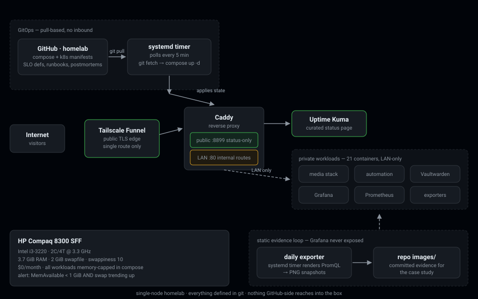
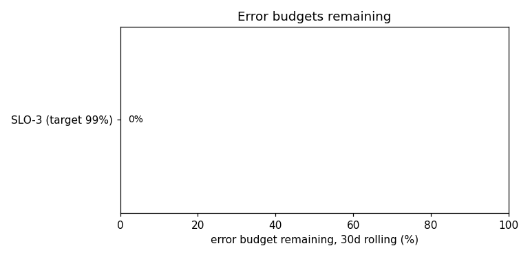
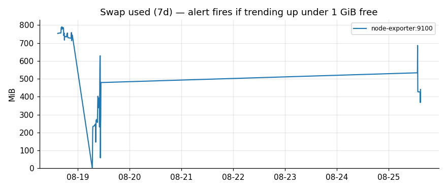

Okechukwu Joshua Onyedikachi
DevOps / SRE. I run a production-discipline homelab: SLOs with error budgets, a pull-based GitOps pipeline, honest postmortems — on hardware nobody else would dare.
$0/month 21 containers i3-3220 · 3.7 GiB RAM SLOs + error budgets
Live
Case study
The full narrative lives in the repo's README — problem, architecture, decisions, what broke, what's next. Highlights:
SLOs & error budgets
Three SLOs sized from a 43,200-minute month, burn-rate alerts, budget policy enforced socially and in Prometheus rules.
Resource engineering
Per-container memory caps, Jellyfin transcode fencing, swappiness tuned to 10, swap-pressure alerting on measured baselines.
Incidents
Real postmortems only: monitoring blind-spot audit, sudo lockout recovered through the GitOps pipeline itself.
GitOps & security
Pull-poller over self-hosted runners, one-route public surface, key-only SSH, procedural secret hygiene.
Architecture & evidence



Snapshots rendered daily from live Prometheus queries by a systemd timer — Grafana itself is never exposed publicly.
Résumé
Built as a static hub — no trackers, no build step, GitHub Pages. The stack behind the status page runs on a 2012 HP Compaq 8300 SFF.